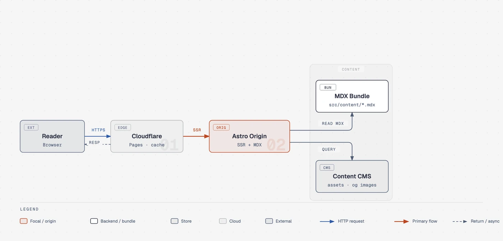

Diagram Design
An agent skill that draws publication-quality diagrams as self-contained HTML files, matching your brand's colors and fonts.
Ask your AI coding assistant to draw a diagram and it picks from 44 types - flowcharts, architecture maps, timelines, charts - and writes one HTML file with clean lines, no shadows, and your brand's colors.

How does it work?
You need a diagram for a blog post, a presentation, or documentation, but AI-generated diagrams look generic - wrong fonts, drop shadows, cluttered lines, and no consistent style.
You ask your AI assistant to draw an architecture diagram. It produces something with random colors, thick borders, and drop shadows - fine for a draft, but not for publishing.
You ask your AI coding assistant to draw a diagram, with an optional note about what type and style you want.
Type 'draw a sequence diagram of the login flow' in Claude Code, Codex, or GitHub Copilot.
A plain-language description of what the diagram should show - or an existing diagram file from draw.io, Mermaid (a text-based diagram tool), or Excalidraw (a whiteboard app) to redraw in a polished style.
Describe what you want: 'architecture diagram showing the API gateway, three microservices, and the database.' Or import a .drawio file to redraw it.
The skill guides the AI through picking a type, matching your brand, and drawing a clean diagram as one file.
- Picks the best diagram type from 44 options: flowcharts, architecture maps, timelines, sequence diagrams, radar charts, Gantt charts, and more
- Reads your website's colors and fonts to match your brand - checks contrast for accessibility and produces a fidelity receipt
- Writes one self-contained HTML file with clean inline graphics - one accent color, 1px hairlines, no shadows, every coordinate on a 4-pixel grid, no scripts or external images
Ask for a flowchart. The skill picks the flowchart type, reads your site's palette, and writes one HTML file you can open in any browser.
A polished, brand-matched diagram file ready to publish.
- A publication-ready diagramOne HTML file you can open in any browser, embed in a blog post, or drop into a presentation
- Brand-matched styleYour accent color, your fonts, hairline borders, no shadows - ready to publish without a design tool
- Multiple export optionsSave as a standalone image (PNG at 2x resolution, or SVG) for slides, or keep the HTML for interactive viewing
What changes for me?
Without it
- AI-generated diagrams look like AI-generated diagrams. Random colors, thick borders, drop shadows, and no style consistency with your brand or your other diagrams.
- Making a publishable diagram means either learning a design tool (Figma, draw.io) or asking a designer. A quick diagram for a blog post takes longer to style than to write.
With it
- Ask for a diagram in plain language and get a publication-ready HTML file with your brand's colors, your fonts, and a consistent editorial style across all 44 types.
- No design tool needed. One prompt, one file, ready to embed in a blog post or deck. Import draw.io or Mermaid files to redraw them in the same clean style.
How hard is it to try?
Effort
- Install in Claude Code:
/plugin marketplace add cathrynlavery/diagram-design, then/plugin install diagram-design@diagram-design. - Ask Claude to draw a diagram: 'draw a flowchart of a user signup flow with email verification.' It picks the type, matches your style, and writes one HTML file.
- Open the HTML file in your browser to see the result. Try the live gallery to see all 44 types.
What it takes on your computer
- Space on disk
- A skill (instruction files and reference documents) - no binary to install. The skill directory is about 60 reference files plus templates. By default, diagrams load Google Fonts; a system-fonts option removes all network requests.
- Memory while it runs
- No data found. The skill runs inside your AI coding assistant - it adds no separate process or server.
- Runs on
- Works with Claude Code, Codex, GitHub Copilot, Cursor, Pi, Gemini, Kiro, and other AI coding assistants. The skill's own CI runs on Linux, Windows, and macOS. Output HTML files open in any browser.
Paste this into Claude Code. It runs your safety scan first, then a 10-minute test.
/skillspector https://github.com/cathrynlavery/diagram-design If that scan passes: install with `/plugin marketplace add cathrynlavery/diagram-design` and `/plugin install diagram-design@diagram-design`, then ask Claude to draw a flowchart. Open the HTML file in your browser. 10 minutes max.
Should I?
Great if you...
- You want publication-quality diagrams for blog posts, presentations, or documentation without learning a design tool - ask in plain language and get a styled HTML file
- You need consistent diagram style across a project or a brand - the skill reads your website's colors and fonts and applies them automatically
Skip it if...
- You need diagrams that change every week and live in version control - the output is a finished HTML file with no editable source format, so every change means regenerating. The creator recommends Mermaid (a text-based diagram tool) for living docs.
- You want pixel-perfect control over every element - the AI picks the layout, and results depend on which model you use
- You need diagrams without any network requests - by default, diagrams load Google Fonts. The system-fonts option removes this, but you must enable it.
Instead, you could look at
- MermaidText-based diagrams that live in Markdown. Best for diagrams that change often and live in version control. Less polished visually, but editable and diff-friendly.
- draw.io (diagrams.net)A free visual diagramming tool with drag-and-drop. More control over layout, but requires manual styling for a consistent look across diagrams.
- ExcalidrawA free whiteboard-style diagramming tool with a hand-drawn look. Great for sketching and brainstorming, less suited for formal publication.
Is it safe?
- Security advisories: 0GitHub's advisory list, checked Oct 16
- Searches for CVEs, vulnerabilities, malware and scams1 results read, including the national CVE database: nothing found
- Are the stars earned?56.2K stars, 65 contributors, 351 commits. Star History: 24.6K stars, Global Rank #1633 as of Aug 2026. Growth appears organic based on gradual climb and coverage timeline.
Watch out for
- Output quality depends on your AI model. The skill is a set of instructions, not a renderer - different models produce different results. The creator, Cathryn Lavery, says: 'The model already understood the content. What it was missing was taste, so I wrote the taste down.'
- No editable source format. The output is a finished HTML file. To change a diagram, you ask the agent to regenerate it. There is no intermediate file you can edit by hand or diff in version control.
- First-run setup blocks unattended use. The brand-matching step requires interaction on first run (GitHub issue #262). This means automated pipelines cannot use the skill without manual setup first.
- Star count has grown rapidly - 56K in 6 months. The growth appears organic based on coverage timeline and gradual climb, but the diagram-type count has shifted across sources (from 13 to 27 to 44), suggesting the project has changed significantly between versions.
Who's using it, and for what?
Diagram Design is 183 days old. No named real-world adopters could be verified outside the creator. The skill is well-reviewed but hands-on testing by reviewers was limited.
We couldn't find anyone describing real use of it yet. That's normal for a brand-new repo, and it's worth knowing.
Who's talking about it
- andrew.oooDiagram Design Review: Editorial Diagrams for Coding Agents
- Web ReactivaDiagram Design skill (Spanish)
- BestHubHow a 28K-Star GitHub Skill Enables AI to Generate Polished Charts
- Trendshiftcathrynlavery/diagram-design trending on Trendshift
- aitoollyDiagram Design launches editorial-grade diagram system for leading AI coding assistants
Sources
- Diagram Design on GitHub (README, features, installation), Oct 16
- Diagram Design website, Oct 16
- Live gallery, Oct 16
- andrew.ooo: Diagram Design Review: Editorial Diagrams for Coding Agents, Oct 14
- BestHub: How a 28K-Star GitHub Skill Enables AI to Generate Polished Charts, Oct 16
- Star History: cathrynlavery/diagram-design, Oct 16